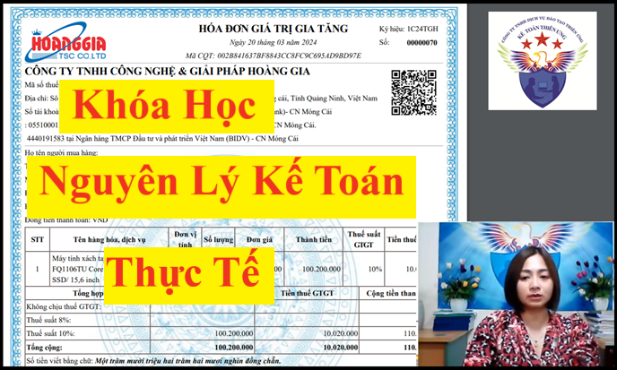
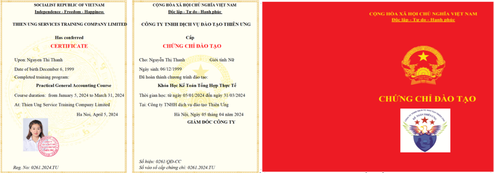

Cảm ơn bạn rất nhiều vì đã dành thời gian để tìm hiểu về các khóa học kế toán thực hành thực tế tại Công ty TNHH Tư vấn & Đào tạo Diệu Tâm
Bạn đang đọc bài viết giới thiệu về chương trình đào tạo của Khóa Học Nuyên Lý Kế Toán Thực Tế
Đây là khóa học dành cho các đối tượng sau:
+ Đầu tiên là những người chưa học gì về kế toán (người mới bắt đầu làm quen với nghề kế toán
+ Thứ hai là những người đã học về kế toán rồi nhưng lâu không sử dụng nên đã quên mất phần định khoản hạch toán
+ Thứ 3 là những người muốn học lại để nắm chắc kỹ năng về định khoản hạch toán, xử lý nghiệp vụ kế toán
+ Đầu tiên là những người chưa học gì về kế toán (người mới bắt đầu làm quen với nghề kế toán
+ Thứ hai là những người đã học về kế toán rồi nhưng lâu không sử dụng nên đã quên mất phần định khoản hạch toán
+ Thứ 3 là những người muốn học lại để nắm chắc kỹ năng về định khoản hạch toán, xử lý nghiệp vụ kế toán
Về mặt tổng quan thì Khóa Học Nuyên Lý Kế Toán Thực Tế sẽ được Công ty TNHH Tư vấn & Đào tạo Diệu Tâm giảng dạy trong thời gian là: 9 buổi học chính thức và có 4 buổi học bổ trợ thêm kiến thức, kỹ năng
Trong khóa học này thì Công ty TNHH Tư vấn & Đào tạo Diệu Tâm tập trung vào việc dạy cách định khoản hạch toán, cách xử lý cách xử lý các nghiệp vụ kinh tế phát sinh trong doanh nghiệp bằng hóa đơn chứng từ tình huống thực tế để hạch toán ghi sổ kế toán.
Cụ thể nội dung chương trình học của từng buổi như sau:
Trước khi đi vào học các buổi học chính thức thì bạn sẽ được học 1 buổi học bổ trợ:
Buổi bộ trợ số 1: các quy tắc, nguyên tắc, quy định và chuẩn mực cơ bản được áp dụng trong lĩnh vực kế toán.
Buổi bộ trợ số 1: các quy tắc, nguyên tắc, quy định và chuẩn mực cơ bản được áp dụng trong lĩnh vực kế toán.
(Đây chính là các nguyên lý cơ bản trong công tác kế toán)
Buổi học chính thức số 1: Cách định khoản, hạch toán kế toán
Hướng dẫn cách định khoản, hạch toán các nghiệp vụ kinh tế phát sinh trong doanh nghiệp để ghi vào sổ sách kế toán theo từng bút toán định khoản.
Sau buổi học số 1 này các bạn sẽ biết:
+ Cách xác định các đối tượng kế toán (Tài sản – Nguồn vốn)
+ Cách sử dụng tài khoản kế toán (Phương tiện để phản ánh, ghi sổ kế toán)
+ Cách thực hiện ghi Nợ, ghi Có trong các bút toán định khoản
+ Làm quen cách xử lý nghiệp vụ kế toán bằng chứng từ thực tế
Sau buổi học chính thức số 1 này các bạn sẽ được gửi vào mail buổi học bổ trợ thứ 2.
Tại buổi học bổ trợ số 2 này các bạn sẽ được hướng dẫn cách vận dụng các kiến thức đã học tại buổi học chính thức số 1 để thực hành xử lý nghiệp vụ kế toán thường gặp trong doanh nghiệp
Buổi học chính thức số 2: Kế toán mua hàng
Hướng dẫn cách thực hiện các công việc liên quan đến mua hàng hóa dịch vụ trong doanh nghiệp
Cụ thể:
Cụ thể:
+ Hướng dẫn cách xác định đơn giá nhập kho, phân bổ chi phí mua hàng
+ Thực hành lập phiếu nhập kho
+ Thực hành hạch toán, ghi sổ các nghiệp vụ liên quan đến công tác mua hàng hóa trong doanh nghiệp
Sau buổi học chính thức số 2 này các bạn sẽ được gửi vào mail buổi học bổ trợ số 3: Hướng dẫn cách hạch toán, cách phân bổ chi phí mua hàng vào cuối kỳ khi doanh nghiệp thực hiện hạch toán chi phí thu mua hàng hóa vào tài khoản chi tiết là TK 1562 - Chi phí thu mua hàng hóa
Hướng dẫn cách thực hiện các công việc liên quan đến bán hàng hóa dịch vụ trong doanh nghiệp
Cụ thể:
Cụ thể:
+ Hướng dẫn cách xác định đơn giá xuất kho
+ Thực hành lập phiếu xuất kho
+ Thực hành hạch toán, ghi sổ các nghiệp vụ liên quan đến công tác bán hàng hóa trong doanh nghiệp
+ Thực hành lập bảng tổng hợp Nhập – Xuất – Tồn, báo cáo tồn kho
Sau buổi học chính thức số 2 này các bạn sẽ được gửi vào mail buổi học bổ trợ số 4: Hướng dẫn thực hiện hạch toán cho các nghiệp vụ Kế Toán Hàng Nhập Khẩu, cách xác định tỷ giá hạch toán hàng nhập khẩu
Buổi học chính thức số 4: Các nghiệp vụ đặc biệt khi mua bán hàng hóa dịch vụ
Hướng dẫn cách xử lý các nghiệp đặc biệt phát sinh trong quá trình mua bán hàng hóa dịch vụ
Cụ thể là Mua - Bán hàng hóa có:

Cụ thể là Mua - Bán hàng hóa có:
+ Chiết khấu thanh toán
+ Chiết khấu thương mại
+ Hàng bán bị trả lại
+ Giảm giá hàng bán
Buổi học chính thức số 5: Kế toán tiền lương và bảo hiểm, kinh phí công đoàn
Hướng dẫn thực hiện:
+ Cách làm hợp đồng lao động
+ Làm thủ tục tham gia đóng bảo hiểm lần đầu cho người lao động
+ Làm thủ tục tham gia đóng bảo hiểm lần đầu cho người lao động
+ Cách chấm công, tính lương, cách lập bảng tính lương hàng tháng
+ Cách hạch toán ghi sổ các nghiệp vụ liên quan đến tiền lương như tạm ứng lương, khấu trừ thuế thu nhập cá nhân, chi phí tiền lương
+ Cách hạch toán các khoản trích nộp bảo hiểm theo lương, hạch toán trích nộp kinh phí công đoàn
+ Cách hạch toán các khoản trích nộp bảo hiểm theo lương, hạch toán trích nộp kinh phí công đoàn
Tại buổi học số 6 này các bạn sẽ được hướng dẫn 3 nội dung:
1. Kế Toán Công cụ dụng cụ:
+ Cách hạch toán khi mua sắm, xuất dùng công cụ dụng cụ
+ Cách tập hợp, xử lý hồ sơ chứng từ, theo dõi, quản lý công cụ dụng cụ
+ Cách phân bổ công cụ dụng cụ, chi phí trả trước
+ Hạch toán các chi phí phát sinh trong quá trình sử dụng: sửa chữa…
2. Kế Toán chi phí trả trước
+ Hạch toán khi phát sinh chi phí trả trước
+ Cách tập hợp, xử lý hồ sơ chứng từ, theo dõi, quản lý chi phí trả trước
+ Cách phân bổ chi phí trả trước
3. Kế Toán Chi phí sản xuất
+ Cách hạch toán các khoản mục chi phí sản xuất
+ Cách tập hợp chi phí sản xuất
Buổi học chính thức số 7: Kế toán tài sản cố định
Hướng dẫn các nghiệp vụ liên quan đến tài sản cố định như:
+ Cách tập hợp, xử lý về hồ sơ chứng từ kế toán khi phát sinh hoạt động mua sắm, sử dụng tài sản cố định.
+ Cách theo dõi quản lý tài sản cố định trong quá trình doanh nghiệp sử dụng tài sản cố định để phục vụ cho hoạt động sản xuất kinh doanh của doanh nghiệp.
+ Cách hạch toán các nghiệp vụ liên quan tới tài sản cố định
+ Cách trích khấu hao tài sản cố định
Tại 2 buổi học này thực hiện làm bài tập kế toán tổng hợp để chúng ta thực hành hạch toán các nghiệp vụ kinh tế phát sinh của 1 doanh nghiệp, với đầy đủ các nghiệp vụ kế toán theo đúng trình tự công việc 1 năm kế toán phải làm trong doanh nghiệp
Ở đây các bạn sẽ được thực hành các nghiệp vụ:
+ Cách hạch toán các bút toán định kỳ
+ Cách hạch toán các bút toán kết chuyển mà cuối kỳ kế toán phải làm
Vào cuối tháng, cuối quý, cuối năm và đầu năm tài chính
Tại 2 buổi học này thực hiện làm bài tập kế toán tổng hợp để chúng ta thực hành hạch toán các nghiệp vụ kinh tế phát sinh của 1 doanh nghiệp, với đầy đủ các nghiệp vụ kế toán theo đúng trình tự công việc 1 năm kế toán phải làm trong doanh nghiệp
Ở đây các bạn sẽ được thực hành các nghiệp vụ:
+ Cách hạch toán các bút toán định kỳ
+ Cách hạch toán các bút toán kết chuyển mà cuối kỳ kế toán phải làm
Vào cuối tháng, cuối quý, cuối năm và đầu năm tài chính
==========================
Lưu ý với các bạn rằng: trong Khóa Học Nuyên Lý Kế Toán Thực Tế này không có nội dung dạy thực hành trên cách phần mềm kế toán và phần mềm hỗ trợ kê khai thuế
Nếu các bạn muốn học cả phần thực hành lên sổ sách, lập báo cáo tài chính, kê khai làm báo cáo thuế trên phần mềm hỗ trợ kê khai thuế HTKK và các phần mềm kế toán thì Công ty đào tạo Kế toán Diệu Tâm mời bạn tham khảo sang khóa học kế toán tổng hợp trọn gói tại đây:
(Trong khóa học này vừa có lý thuyết và vừa có thực hành thực tế)
================================
==========================
Các thông tin khác mà bạn có thể muốn biết về "Khóa Học Nuyên Lý Kế Toán Thực Tế":
1. Hình thức học: Dạy Online (Trực tuyến qua mạng)
2. Thời gian học: Học theo ca - theo lớp
+ Trong ngày: bạn có thể chọn 1 trong 3 ca:
+/ Ca sáng từ 8h30 đến 11h
+/ Ca chiều từ 14h đến 16h30
+/ Ca tối từ 19h đến 21h30.
+ Trong tuần: Bạn có thể chọn học 3 buổi 1 tuần vào Thứ 2-4-6 hoặc vào thứ 3-5-7
3. Giảng Viên giảng dạy: Là các kế toán Trưởng có nhiều năm kinh doanh đi làm thực tế tại các doanh nghiệp
Được trang bị kỹ năng sư phạm, luôn thân thiện và nhiệt tình trong quá trình giảng dạy.
4. Lịch Khai giảng: Hàng tuần
Các lớp học nguyên lý kế toán thực tế online được khai giảng thường xuyên trong tuần (tuần nào cũng mở lớp mới)
(Các bạn đăng ký => Nhận tài liệu => Xem trước tài liệu và video bổ trợ 1 - 2 hôm là bắt đầu vào học chính thức được)
(Các bạn đăng ký => Nhận tài liệu => Xem trước tài liệu và video bổ trợ 1 - 2 hôm là bắt đầu vào học chính thức được)
5. Tài liệu học: là các hóa đơn chứng từ kế toán thực tế, các mẫu biểu sổ sách, tờ khai, báo cáo theo đúng thực tế ngoài doanh nghiệp đang áp dụng
(Tài liệu học sẽ được gửi ship tới chỗ ở hoặc nơi làm việc của bạn) (Bạn không phải trả phí ship)
6. Học phí của "Khóa Học Nuyên Lý Kế Toán Thực Tế":
Học phí chưa giảm giá là 1.100.000đ
Đang có giảm giá 200.000đ
=> Học phí còn lại là 900.000đ
(Học phí này đã bao gồm cả tiền tài liệu và làm chứng chỉ => Bạn không phải đóng thêm khoản phí nào nữa)
(Học phí này đã bao gồm cả tiền tài liệu và làm chứng chỉ => Bạn không phải đóng thêm khoản phí nào nữa)
7. Chứng chỉ: Sau khi bạn hoàn thành khóa học thì bạn sẽ được cấp chứng chỉ

8. Quy trình đăng ký học online:
(1) Gọi điện hoặc nhắn tin zalo theo số Hotline của Kế toán Diệu Tâm là: 0987.026.515 để được tư vấn hỗ trợ ban đầu về thông tin các khóa học, lựa chọn khóa học phù hợp.
(Bạn hãy lưu lại số Hotline này để được hỗ trợ khi cần)
(2) Làm theo các hướng dẫn để hoàn tất việc đăng ký học Online:
+ Đọc, xác nhận nội quy tham gia khóa học kế toán online
+ Chuyển khoản tiền học phí
+ Cung cấp chính xác các thông tin để nhận tài liệu gồm: Email để nhận file mềm, địa chỉ nhà (hoặc cơ quan) để nhận tài liệu giáo trình bản cứng từ Shipper.
(3) Nhận tài liệu và lịch khai giảng khóa học đã đăng ký.
(4) Xem trước tài liệu và các video bổ trợ cho khóa học để khi đi học đạt chất lượng tốt nhất.
(5) Tham gia khóa học theo lịch khai giảng, lịch học đã được thông báo qua mail tại bước (3)
=============================
Để biết thêm thông tin chi tiết về "Khóa Học Nuyên Lý Kế Toán Thực Tế" thì bạn vui lòng liên hệ với số:
.png "Số Hotline tư vấn khóa học của Kế toán Diệu Tâm")
==================================
Để biết thêm thông tin chi tiết về "Khóa Học Nuyên Lý Kế Toán Thực Tế" thì bạn vui lòng liên hệ với số:
==================================
Công ty TNHH Tư vấn & Đào tạo Diệu Tâm cảm ơn bạn rất nhiều khi đã dành thời gian để tìm hiểu về các khóa học kế toán online của công ty
Công ty TNHH Tư vấn & Đào tạo Diệu Tâm rất mong có cơ hội được chia sẻ các kỹ năng, kinh nghiệm làm kế toán tới bạn! Thân ái!
Công ty TNHH Tư vấn & Đào tạo Diệu Tâm rất mong có cơ hội được chia sẻ các kỹ năng, kinh nghiệm làm kế toán tới bạn! Thân ái!